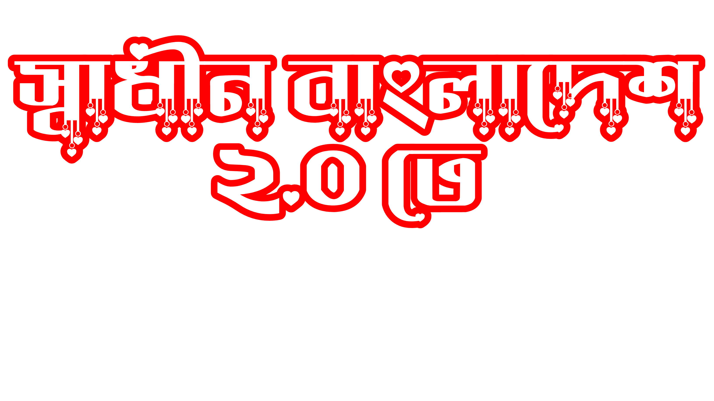
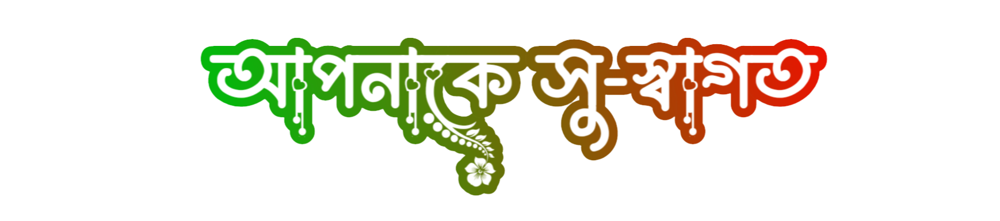

১৯৭১ সালের ১৬ই ডিসেম্বর, নয় মাসের রক্ত খেয়ে মুক্তিযুদ্ধের মাধ্যমে বাংলাদেশে প্রথমবারের মতো
স্বাধীনতা অর্জন করে!!
তারপর নানা উত্থান-পত্তন এবং স্বৈরাশার শাসনের কবলে পড়ে পুনরায় পরাধীন হয়ে যায়।
গত ৩৬ই জুলাই (৫ই আগষ্ট) ২০২৪ইং তারিখে বাংলাদেশের তরুণ ছাত্র সমাজের গণঅভ্যুত্থান মুখে,
স্বৈরাচারী শাসকরা দেশ ছেড়ে পালায়, এবং পুনরায় অর্জিত হয় বাংলাদেশের স্বাধীনতা !
চলুন আমরা জেনে আমরা জেনে নিই সেই নতুন বাংলাদেশের স্বাধীনতার সম্পর্কে ।
বাংলাদেশ 2.0